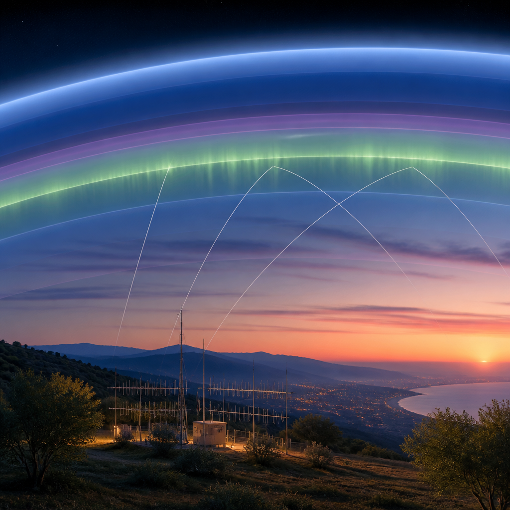
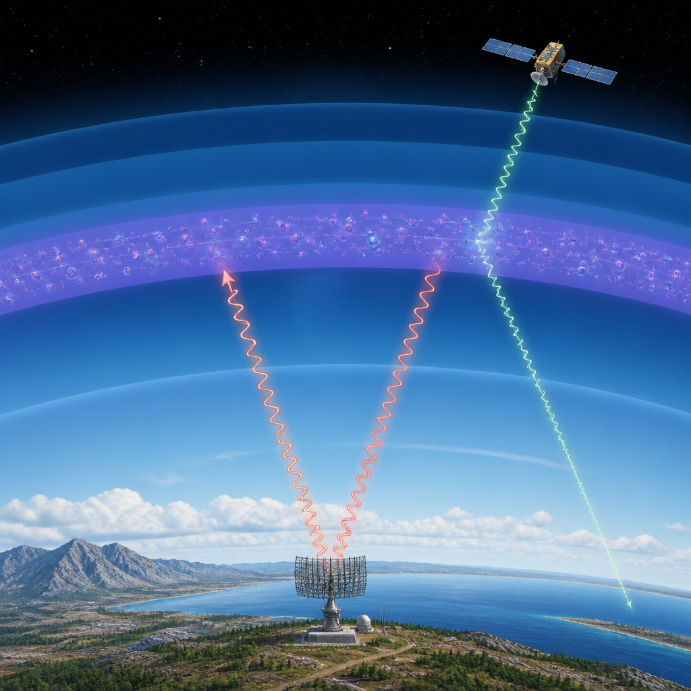

L’osservatorio INGV amplia la rete italiana che monitora l’alta atmosfera e le sue variazioni.
L’INGV ha inaugurato il nuovo Osservatorio ionosferico della Spezia. La stazione entra nella rete italiana dedicata al monitoraggio della ionosfera, una regione dell’alta atmosfera che cambia continuamente e che ha un ruolo importante nella propagazione delle onde radio e nei segnali di navigazione satellitare.
L’osservatorio si aggiunge alle strutture storiche di Roma e Gibilmanna, in Sicilia. Avere punti di misura distribuiti lungo la penisola permette di confrontare le condizioni osservate a latitudini diverse: un confronto utile perché la ionosfera non ha ovunque le stesse caratteristiche e può cambiare rapidamente.
La nuova infrastruttura è stata realizzata grazie alla collaborazione tra INGV e Istituto culturale Astrofili Spezzini, che ospita la stazione presso un proprio immobile. Con La Spezia, Roma e Gibilmanna, la rete dispone di tre osservatori lungo una direttrice nord-sud.
La ionosfera è una regione dell’atmosfera terrestre situata sopra i 60 chilometri di quota, dove sono presenti ioni ed elettroni liberi, cioè particelle elettricamente cariche. Si formano soprattutto quando la radiazione solare trasferisce energia ad atomi e molecole dell’atmosfera, innescando la ionizzazione: il processo che produce particelle cariche.
Questa regione si estende fino a circa mille chilometri di altitudine, ma non è uno strato uniforme. La densità elettronica, cioè la concentrazione di elettroni liberi, varia con la quota, tra giorno e notte, con le stagioni e in relazione all’attività solare. Anche le perturbazioni dell’ambiente spaziale terrestre possono modificare sensibilmente le condizioni ionosferiche.
Gli elettroni liberi influenzano il viaggio delle onde radio. La ionosfera può rinviare verso la superficie segnali radio in alta frequenza, rendendo possibili comunicazioni a lunga distanza anche oltre l’orizzonte. È inoltre attraversata dai segnali dei sistemi globali di navigazione, o GNSS, come GPS e Galileo. Nel loro percorso, questi segnali possono subire ritardi e, quando sono presenti irregolarità ionosferiche, scintillazioni: rapide variazioni di ampiezza e fase che possono ridurre precisione e affidabilità del posizionamento.

Uno degli strumenti principali dell’osservatorio è la ionosonda, un sistema radar che invia verso l’alto segnali radio a frequenze diverse e registra quelli che vengono rinviati verso il suolo. Dal tempo necessario al ritorno degli echi, lo strumento ricava informazioni sulle altezze virtuali da cui provengono.
Il risultato è lo ionogramma, un grafico che mette in relazione la frequenza dei segnali trasmessi e l’altezza virtuale dei rispettivi echi. Interpretandolo si possono determinare parametri della ionosfera e stimare come la densità elettronica vari con la quota.
Le ionosonde dell’INGV eseguono osservazioni regolari. I dati sono elaborati anche con Autoscala, un software sviluppato dall’Istituto che interpreta automaticamente gli ionogrammi e ricostruisce il profilo verticale della densità elettronica in tempo quasi reale. Gli osservatori sono pensati per fornire uno ionogramma ogni cinque minuti.
Una ionosonda osserva soprattutto la regione ionosferica sopra il luogo in cui è installata. Le sue informazioni rappresentano quindi un’area geografica limitata, mentre le condizioni possono differire anche a distanze relativamente brevi. Il confronto fra più stazioni consente invece di descrivere situazioni che interessano territori più estesi.
La distribuzione geografica degli osservatori aiuta a riconoscere differenze spaziali e a studiare come una perturbazione ionosferica si manifesti nelle diverse regioni. Le misure raccolte alla Spezia, a Roma e a Gibilmanna possono contribuire a migliorare i modelli ionosferici, usati per rappresentare distribuzione e variabilità della densità elettronica e per seguire fenomeni che si propagano da nord a sud, o in direzione opposta.
La continuità delle misure permette di riconoscere variazioni quotidiane e stagionali, individuare comportamenti anomali e studiare la risposta della ionosfera all’attività solare. La rete è preziosa proprio perché unisce osservazioni ripetute nel tempo e raccolte in località differenti.
Le ionosonde sono solo una parte dell’infrastruttura osservativa INGV, che comprende strumenti installati anche in altre regioni del mondo, dalle aree polari a quelle equatoriali. La rete utilizza inoltre ricevitori GNSS, per misurare il contenuto elettronico totale lungo il percorso dei segnali satellitari e studiare le scintillazioni, strumenti ottici per l’alta atmosfera e osservatori geomagnetici che registrano le variazioni del campo magnetico terrestre.
L’integrazione di queste osservazioni sostiene la meteorologia spaziale, la disciplina che studia le condizioni dell’ambiente spaziale, le loro variazioni e i possibili effetti sui sistemi tecnologici. I dati vengono trasmessi ai sistemi di acquisizione ed elaborazione e utilizzati per produrre mappe, indici e modelli delle condizioni ionosferiche.
Un prodotto è la mappa della massima frequenza utilizzabile, o MUF: indica la frequenza più alta impiegabile per uno specifico collegamento radio che sfrutti la propagazione ionosferica. Le mappe INGV per l’Europa sono aggiornate in tempo quasi reale attraverso il nowcasting, cioè una rappresentazione delle condizioni attuali basata anche sulle osservazioni più recenti.
Le misure della nuova stazione sono entrate nel Bollettino settimanale di meteorologia spaziale per il Mediterraneo dell’INGV dal numero 31 del 2026. L’osservatorio della Spezia amplia così la copertura geografica della rete e fornisce dati per le mappe ionosferiche europee, per il bollettino e per le attività di ricerca e monitoraggio.
Questo articolo l'hai letto sul blog di Meteo News Radar: un'app che ti mostra da dove vengono i numeri, invece di limitarsi a dartelo. E ogni mattina ne trovi uno nuovo come questo.